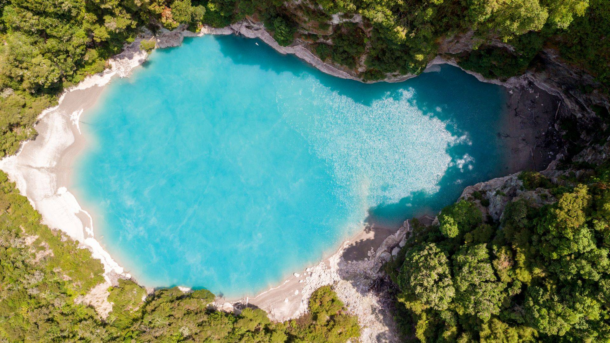
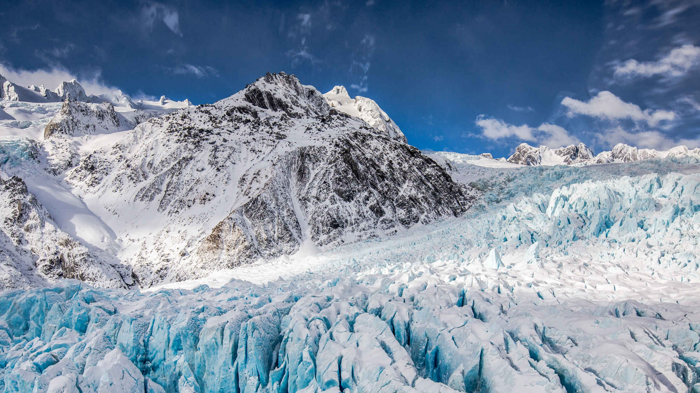
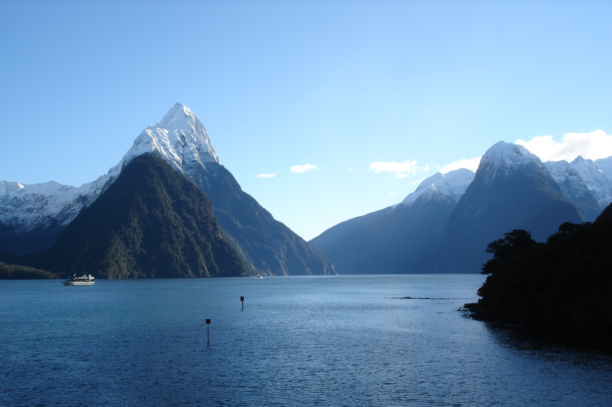

New Zealand is one of the last major landmasses settled by humans. Radiocarbon dating, evidence of deforestation and mitochondrial DNA variability within Maori populations suggest that Eastern Polynesians first settled the New Zealand archipelago between 1250 and 1300, although newer archaeological and genetic research points to a date no earlier than about 1280, with at least the main settlement period between about 1320 and 1350, consistent with evidence based on genealogical traditions. This represented a culmination in a long series of voyages through the Pacific islands. Over the centuries that followed, the Polynesian settlers developed a distinct culture now known as Maori. The population formed different iwi (tribes) and hapū (subtribes) which would sometimes cooperate, sometimes compete and sometimes fight against each other. At some point, a group of Maori migrated to Rēkohu, now known as the Chatham Islands, where they developed their distinct Moriori culture. The Moriori population was all but wiped out between 1835 and 1862, largely because of Taranaki Maori invasion and enslavement in the 1830s, although European diseases also contributed. In 1862, only 101 survived, and the last known full-blooded Moriori died in 1933.
Wellington

Wellington is the capital city of New Zealand. It is located at the south-western tip of the North Island, between Cook Strait and the Remutaka Range. Wellington is the major population centre of the southern North Island, and is the administrative centre of the Wellington Region, which also includes the Kapiti Coast and the Wairarapa. It is the world's southernmost capital of a sovereign state. Wellington features a temperate maritime climate, and is the world's windiest city by average wind speed.
Attraction
|

Waimangu Geyser |

Franz Josef Glacier |

Milford Sound |